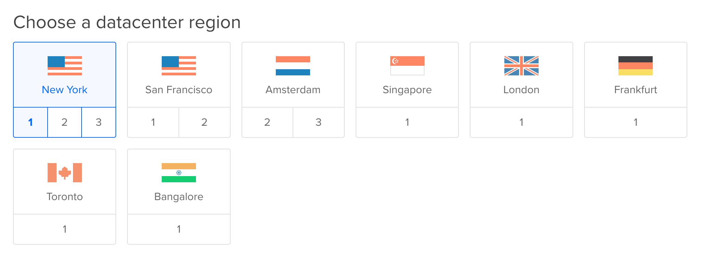

Chapter 7 Nephology
I saw a city in the clouds. - Dagobahnian proverb
7.1 Introduction to Cloud Computing
Nephology is the study of clouds. Few modern technology concepts (other than maybe data science and artificial intelligence) have been hyped as loudly as “the cloud.” The cloud is simply a computer which we can access over the internet. In this chapter we’ll set up a cloud computer and we’ll learn the basics of interacting with one.
To get the most out of this chapter you’re going to need your credit or debit card, or a PayPal account. We’re going to be using DigitalOcean, a company which we can rent cloud computers from. Throughout this chapter I might refer to cloud computers as servers (computers connected to the internet) or as droplets, which is a marketing term DigitalOcean uses to refer to their servers (a droplet is not a technical term). Renting from DigitalOcean won’t cost you any money since I’m giving you a coupon for two free months of service! There are several companies that offer similar services compared to DigitalOcean, but in my opinion they have the best user interface and the most transparent pricing model.
Warning: At the end of this chapter we will discuss how to shut down any servers we’ve started on DigitalOcean. If you don’t shut down your server after two months then your account will be charged real money for using DigitalOcean. Please be sure to shut down any servers you start after you are finished using them.
7.2 Setting Up DigitalOcean
To get started with DigitalOcean we need to rent a server from their website. Click this link to sign up for DigitalOcean in order to get two free months of server use. (If you don’t use this link then you don’t get two free months). Click Sign Up in the upper right corner, then enter your email address and choose your password.

Check your email for a message from DigitalOcean and click the enclosed link to confirm your email. Then you’ll need to enter your credit or debit card information, or your Paypal account details. As long as you close down all of your servers less than two months after you start them you will not be charged. After entering in your payment information you should see this screen:

Click the big blue Create a new Droplet button which should then bring you to a screen where you can customize the server you’re going to be renting. Make sure you have Ubuntu chosen as your distribution, and select the $5 per month size option:

Scroll down the page and then select the region that is geographically closest to you. Some regions have multiple data centers, it doesn’t matter which data center you pick. Currently I’m in Baltimore, Maryland, USA, so I’m going to pick the number 1 data center in New York:

Finally at the bottom of the page click the big green Create button in order to start your server!

It will take a minute to launch the server, but once launched
you should receive an email from Digital Ocean with the details about your
new server. Included in this email you should find the IP address of your
server, the default username (which should be root) and a
randomly generated password that you will need to connect to
your server for the first time. Once you’ve received this email open up a new
terminal.
7.3 Connecting to the Cloud
We can connect to computers on the internet with the ssh program, which
stands for Secure Shell. The ssh command provides a command line
interface to whichever computer we point it to. A computer that is connected to
the internet has an address (just like a house has an address) which is
specified by an IP address. The command for connecting to a computer with
ssh generally looks like this:
ssh [username]@[IP address]Let’s connect to our DigitalOcean server using ssh. Enter the following
command in the terminal substituting the IP address you received from
DigitalOcean for the IP address I’m using in this example:
ssh root@159.203.134.88## The authenticity of host '159.203.134.88 (159.203.134.88)' can't be established.
## ECDSA key fingerprint is SHA256:UhtoIx/3c6/MmAIE+H8w5oGE06PsbXdzRRsAUhKtjhs.
## Are you sure you want to continue connecting (yes/no)?Type yes and then press Enter.
## Warning: Permanently added '159.203.134.88' (ECDSA) to the list of known hosts.
## root@159.203.134.88's password:This password should be in the email you received from DigitalOcean. Copy and paste the password into the terminal, then press Enter.
## You are required to change your password immediately (root enforced)
## Welcome to Ubuntu 16.04.2 LTS (GNU/Linux 4.4.0-78-generic x86_64)
##
## * Documentation: https://help.ubuntu.com
## * Management: https://landscape.canonical.com
## * Support: https://ubuntu.com/advantage
##
## Get cloud support with Ubuntu Advantage Cloud Guest:
## http://www.ubuntu.com/business/services/cloud
##
## 0 packages can be updated.
## 0 updates are security updates.
##
##
##
## The programs included with the Ubuntu system are free software;
## the exact distribution terms for each program are described in the
## individual files in /usr/share/doc/*/copyright.
##
## Ubuntu comes with ABSOLUTELY NO WARRANTY, to the extent permitted by
## applicable law.
##
## Changing password for root.
## (current) UNIX password:We now need to create a new password for this server. First paste in the old password and press Enter. Then think of a new, strong password and enter it into the console. Then enter the new password again to confirm. After entering in the new password we should have a prompt! Press enter a few times to make sure that you get the prompt back each time. We’re in!
Now we have access to all of the Unix commands we would normally have:
pwd## /rootIn order to disconnect from the server and return to your machine use logout.
logout## Connection to 159.203.134.88 closed.To reconnect to the server use ssh again:
ssh root@159.203.134.88## root@159.203.134.88's password:Enter your password and you should get the prompt back for your cloud server.
7.3.1 Summary
sshconnects you to computers that are connected to the internet. The template for the command to connect isssh [username]@[IP address].- To disconnect from an
sshsession use thelogoutcommand.
7.4 Cloud Computing Basics
7.4.1 Moving Files In and Out of the Cloud
So now that we have a cloud computer, what can we do with it? One thing we
can do is store and retrieve files from a cloud computer. The program scp
allows us to copy local files to a server and it allows us to copy files on
a server to our local computer. First let’s connect to our server so we can
create a file there:
ssh root@159.203.134.88## root@159.203.134.88's password:
## # (Enter your password)mkdir textfiles
echo "From the server" > textfiles/server-file.txt
logout## Connection to 159.203.134.88 closed.Now that we’re back at the prompt on our local machine let’s try getting
server-file.txt from our server. The arguments for copying files from a server
with scp have the following general structure:
scp [username]@[IP address]:path/to/file/on/server path/on/my/computerThis copies the file located on the server at path/to/file/on/server to a
local path at path/on/my/computer. In the same way we can copy an entire
folder from a server using the -r flag:
scp -r [username]@[IP address]:path/to/folder/on/server folder/on/my/computerLet’s try doing this now from our local computer. Enter your password when asked to do so:
cd
pwd## /Users/sean/mkdir Cloud
cd Cloud
scp root@159.203.134.88:/root/textfiles/server-file.txt downloaded.txt## root@159.203.134.88's password:
## server-file.txt 100% 16 1.2KB/s 00:00cat downloaded.txt## From the serverIt worked! Now let’s try uploading a file to our server. The arguments for doing this are just the swapped arguments for downloading a file from a server:
scp path/on/my/computer [username]@[IP address]:path/to/file/on/server Let’s create a file and upload it to our server:
echo "from local computer" > to-upload.txt
scp to-upload.txt root@159.203.134.88:/root/textfiles/uploaded-file.txt## root@159.203.134.88's password:
## to-upload.txt 100% 20 1.8KB/s 00:00Now let’s log in to our server and we’ll see if it’s there:
ssh root@159.203.134.88
cat textfiles/uploaded-file.txt## from local computerLooks like it worked! Keeping files in the cloud allows you to work with the
same files in the same workspace as long as you have access to a terminal and
ssh.
7.4.2 Talking to Other Servers
There are tons of servers out there on the internet! The way you’re probably
used to talking to a server is through a web browser, but there are other ways
we can talk to servers on the command line. One of the most popular command line
programs for talking to other servers is curl. The curl command allows us
to send requests and information to other servers.
One easy task that we can use curl for is downloading files that are available
online. For example, this entire book and all of the files associated with it
are hosted on a server! You can find the Markdown file for one of the first
chapters of this book here.
To download a file with curl, we simply need to provide the -O flag and the
URL of the file:
curl -O http://website.org/textfile.txtLet’s try downloading the Markdown file from my website:
curl -O http://seankross.com/the-unix-workbench/01-What-is-Unix.md## % Total % Received % Xferd Average Speed Time Time Time Current
## Dload Upload Total Spent Left Speed
## 100 1198 100 1198 0 0 13681 0 --:--:-- --:--:-- --:--:-- 13770head -n 5 01-What-is-Unix.md## # What is Unix?
##
## Unix is an operating system and a set of tools. The tool we'll be using the
## most in this book is a shell, which is a computer program that provides a
## command line interface. You've probably seen a command line interface in theLooks like we got the file! The curl command is also commonly used for
communicating with APIs. API stands for application
programming interface. APIs are a set of rules which allow us to
communicate with computer programs or with servers on the web. GitHub has a
large API which allows us to find out
information about GitHub’s users and repositories. Let’s use curl to look
at what programming languages are used by some of my repositories. Let’s start
with the repository for this book:
curl https://api.github.com/repos/seankross/the-unix-workbench/languages{
"CSS": 2615,
"TeX": 22
}It looks like most of the repository is dedicated to making the book website
look pretty! Take a look at the URL in the curl command above, and let’s
dissect it a little bit. The API itself is located at https://api.github.com/.
Then each word in the rest of the url acts as a sort of argument. We’re
interested in repos in this case, specifically a repo belonging to the
username seankross called the-unix-workbench, and we want to know about
which languages are used in that repo. Let’s take a look at one more of my
repositories just to see how the response can be different:
curl https://api.github.com/repos/seankross/lego/languages{
"R": 4197,
"Shell": 442
}Use of curl, especially when coupled with using APIs can become very
complicated and much more advanced content has been written on the subject.
Let’s get a little more in depth by looking through some of the examples from
httpbin.org. This website allows us to send requests to
it with curl, and it will return to us a structured version of whatever
information we sent. This is useful for debugging our curl commands. First
let’s send a request which should return our IP address:
curl http://httpbin.org/ip{
"origin": "159.203.134.88"
}Looks like we’re getting the response we expect. Before we go on I should
clarify: curl sends HTTP requests. HTTP is a technology for sending
information over a network, and HTTP powers much of how the internet works.
There are different categories of HTTP requests, and the categories are often
called verbs. When we use curl without any flags we are sending a
GET request (GET is an HTTP verb). A GET request is a message that says to
a server: “Hi, I live at [IP address]. Would you mind sending some information
about yourself to that IP?” In the case above we asked for our own IP address,
which httpbin.org knew to just send back to us.
Let’s send a general HTTP GET request to http://httpbin.org/get:
curl http://httpbin.org/get{
"args": {},
"headers": {
"Accept": "*/*",
"Connection": "close",
"Host": "httpbin.org",
"User-Agent": "curl/7.47.0"
},
"origin": "159.203.134.88",
"url": "http://httpbin.org/get"
}The text that we get back from the request specifies four information groups:
args, headers, origin, and url. The origin shows our own IP address,
and url shows where we sent the request. The headers group shows some
interesting information, including the User-Agent which shows that httpbin.org
knows that we sent this request with curl. Notice that the args group is
empty. The args group is short for arguments, which hints at the fact that
we can provide arguments in an HTTP request, just like arguments we would use
for a function, or the arguments we used in the GitHub API.
In the general case we can provide arguments to an HTTP API by putting a
question mark (?) after the API’s URL. Let’s try this out:
curl http://httpbin.org/get?Baltimore{
"args": {
"Baltimore": ""
},
"headers": {
"Accept": "*/*",
"Connection": "close",
"Host": "httpbin.org",
"User-Agent": "curl/7.47.0"
},
"origin": "159.203.134.88",
"url": "http://httpbin.org/get?Baltimore"
}Looks like "Baltimore" showed up in args! For most HTTP APIs we need to
give names to our arguments, unlike most arguments in Bash. We can specify
an argument’s name with the template [argument name]=[argument value]. Let’s
take a look at a simple example:
curl http://httpbin.org/get?city=Baltimore{
"args": {
"city": "Baltimore"
},
"headers": {
"Accept": "*/*",
"Connection": "close",
"Host": "httpbin.org",
"User-Agent": "curl/7.47.0"
},
"origin": "159.203.134.88",
"url": "http://httpbin.org/get?city=Baltimore"
}Now we can see that in args there’s a correspondence between city and
Baltimore. We can add more named arguments by separating them with an
ampersand (&):
curl "http://httpbin.org/get?city=Baltimore&state=Maryland"{
"args": {
"city": "Baltimore",
"state": "Maryland"
},
"headers": {
"Accept": "*/*",
"Connection": "close",
"Host": "httpbin.org",
"User-Agent": "curl/7.47.0"
},
"origin": "159.203.134.88",
"url": "http://httpbin.org/get?city=Baltimore&state=Maryland"
}Perhaps you could imagine building a server that accepts HTTP requests, and sends back different information depending on what arguments are provided (for example, send back a weather report given a location). Building these kinds of servers is an advanced topic that is outside the scope of this book, but there are lots of resources out there if you’re interested in building your own HTTP API on a web server.
7.4.3 Automating Tasks
One of the most compelling features about any web server is that it’s always
powered on and always connected to the internet. This means that we can instruct
our server to perform tasks automatically, without us needing to enter a command
into a shell. One of the most commonly used programs for executing other programs
with a regular frequency is called cron. Let’s take a look at how to use
cron to schedule a program to be run.
If you’re not already connected to the server use ssh to connect.
ssh root@159.203.134.88The cron program is part of a family of programs called daemons. A daemon
is a program that is always running in the background of our computer. First,
let’s see if cron is running. We can get a list of all running programs
with the ps command while using the -A flag:
ps -A## PID TTY TIME CMD
## 1 ? 00:00:13 systemd
## 2 ? 00:00:00 kthreadd
## 3 ? 00:00:03 ksoftirqd/0
## 5 ? 00:00:00 kworker/0:0H
## 7 ? 00:00:11 rcu_sched
## 8 ? 00:00:00 rcu_bh
## 9 ? 00:00:00 migration/0
## ...You probably have a huge list of programs in your terminal now! Instead of
sifting through this listing line-by-line, let’s pipe the output of this command
to grep and we’ll look for cron:
ps -A | grep "cron"## 1273 ? 00:00:01 cronLooks like the cron daemon is running! In order to assign programs to be
executed with cron we need to edit a special text file called the cron
table. Before we edit the cron table we need to select the default text
editor. If you like using nano (the text editor we’ve been using throughout
this book) then enter select-editor into the console, type in the number
that corresponds to nano (usually 2) and then press enter:
select-editor## Select an editor. To change later, run 'select-editor'.
## 1. /bin/ed
## 2. /bin/nano <---- easiest
## 3. /usr/bin/vim.basic
## 4. /usr/bin/vim.tiny
##
## Choose 1-4 [2]:Now that we’ve chosen a text editor we can edit the cron table using the
command crontab -e (cron table edit) which will automatically
open nano with the appropriate file.
crontab -e# Edit this file to introduce tasks to be run by cron.
#
# m h dom mon dow command
Let’s go over the layout of the cron table. First you should notice that any
text after a pound sign (#) is a comment, so it’s not seen by cron (just
like bash comments). The cron table has six columns:
- Minute (
m) - Hour (
h) - Day of Month (
dom) - Month (
mon) - Day of Week (
dow) - Command to be run (
command)
Each column is separated by a single space in the table. The first five columns allow you to specify when you want a particular command to be run. Only certain values are valid in each column:
- Minute:
00 - 59(A particular minute in an hour) - Hour:
00 - 23(0 is the midnight hour) - Day of Month:
01 - 31(1 is the first day of the month) - Month:
01 - 12(1 is January) - Day of Week
0 - 6(0 is Sunday)
There are also a few other characters that are valid in the cron table. The
most commonly used character is a star (*) which represents all of the
possible values in a column. So a star in the Minute column means “run every
minute,” and a star in the Hour column means “run during every hour.”
Knowing this let’s make our first entry in the cron table. If we want a
command to be executed every minute, during every hour, on every day of the
month, during every month, on every day of the week, then we can put stars in
all of the first five
columns, followed by the command that we want to run. In this case the command
that cron will run every minute will be date >> ~/date-file.txt, which will
append the date and time when the command is executed to a file in our home
directory called date-file.txt. This is what your cron table should look
like before you save and exit from nano:
# Edit this file to introduce tasks to be run by cron.
#
# m h dom mon dow command
* * * * * date >> ~/date-file.txtSave and exit nano just like you would for a regular text file and then wait
a little bit! After a minute has gone by use cat to look at ~/date-file.txt:
cd
cat date-file.txt## Thu Jun 8 18:50:01 UTC 2017Look like our entry in the cron table is working! Wait another minute and then
look at the file again:
cat date-file.txt## Thu Jun 8 18:50:01 UTC 2017
## Thu Jun 8 18:51:01 UTC 2017Unless we delete the line that we entered in the cron table, the output from
date will be appended to date-file.txt every minute.
The single line of bash date >> ~/date-file.txt is a much simpler program than
we would probably use in a cron table, though it’s good for illustrating how
a cron table works. If you want to do more complex tasks with cron it’s
better for cron to execute a bash script that you’ve written in advance. That
way you can just specify bash /path/to/script.sh in the last column of the
table.
Using stars in all columns is the simplest line of a cron table, so let’s
look at some examples of more complex table entries:
# m h dom mon dow command
00 * * * * bash /path/to/script.sh # Runs every hour at the start of the hour
00 12 * * * bash /path/to/script.sh # Runs every day at noon
* 12 * * * bash /path/to/script.sh # Runs every minute between 12pm and 12:59pm
00 00 05 * * bash /path/to/script.sh # Runs the 5th day of every month at midnight
00 00 * 07 * bash /path/to/script.sh # Runs every day in the month of July at midnight
00 00 * * 2 bash /path/to/script.sh # Runs every Tuesday at midnightBesides numbers and the star there are a few other characters that you can use
in cron table columns including a hyphen (-) for specifying ranges and a
comma (,) for specifying lists of items. For example 00-29 in the Minutes
column would specify the first thirty minutes of an hour, while 1,5 in the
Day of Week column would specify Monday and Friday.
Let’s take a look at another example of a cron table that uses hyphens and
ranges so you can get a sense of how each character works.
# m h dom mon dow command
00-04 * * * * bash /path/to/script.sh # Runs every minute for the first five minutes of every hour
00 00 * * 0,6 bash /path/to/script.sh # Runs at midnight every Saturday and Sunday
00 03 01-15 * * bash /path/to/script.sh # Runs at 3am for the first fifteen days of every month
00,30 * * * * bash /path/to/script.sh # Runs at the start and middle of every hour
00 00,12 * * * bash /path/to/script.sh # Runs every day at midnight and noon
00 * 01-07 01,06 * bash /path/to/script.sh # Runs at the start of every hour for the first seven days of the months of January and JuneA program that is being run by cron is only as powerful as your imagination
can stretch! If you’re familiar with the social network
Twitter then you might have come across some Twitter
accounts which create posts automatically like
Emoji Aquarium,
Old Fruit Pictures, or
Endless Screaming. Many of these “bot”
accounts are powered by cron, which uses Twitter’s HTTP API to post tweets
regularly.
7.4.4 Summary
scpcopies files between a cloud computer and your personal computer. Use the-rflag in order to copy directories.curlallows you to send HTTP requests to other servers. Use the-Oflag to download files withcurl.ps -Alists all of the programs running in the background of your computer.cronallows you to schedule when programs are run. Usecrontab -ein order to edit thecrontable.
7.4.5 Exercises
- Write a bash script that takes a file path as an argument and copies that file to a designated folder on your server.
- Find a file online that changes periodically, then write a program to download that file every time it changes.
- Try creating your own Twitter or GitHub bot with the Twitter API or the GitHub API.
7.5 Shutting Down a Server
In order to avoid using more DigitalOcean credits than we have to or
being charged for using the service make sure to destroy any DigitalOcean
droplets that you started. When you destroy a droplet all files
on the droplet are gone forever, so please be sure that you don’t have any
important information on a droplet before you destroy it. If there are files
you want to save on your droplet use scp in order to copy them to your local
machine. Let’s walk through destroying a droplet. Go back to
DigitalOcean and log in. You should then see
a listing of all of your droplets:

Click on More on the right side of the screen and a menu should appear. Click Destroy at the bottom of this menu. Then this screen should appear:

Click the Destroy button and then click Confirm in the menu that pops up. Your droplet should now be destroyed. If you have no active droplets then the main droplets page should look like this:

Congratulations on your new cloud computing skills!